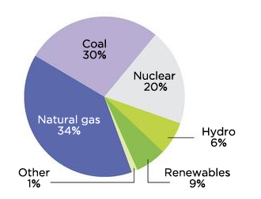

Welcome to the group 7 SIM challenge website!
Nowadays, we are facing an energy crisis and we need to try our best to solve this as quickly as possible. We are running out of limited natural resources like coal, natural gas and oil/petroleum to power our industrial society and meet the energy and electricity demands of today worlds. The demand will keep increasing and the limited natural resources will keep decrease. Every country in this world needs to use more renewable energy because it could help reduce our dependence on fossil fuels and it could also reduce the greenhouse emission. Therefore, all of us could have a sustainable future.
The stakeholders that we want to encourage to use more renewable energy is the first world countries. Many people may think that developed countries would invest more in renewable energy than in developing countries. However, it is in fact that those developing countries are now investing more money into renewable energy than many rich countries according. According to the Renewables 2016 report by the Renewable Energy Policy Network for the 21st Century, it stated,
“A total of about £196.5bn was spent renewable power and fuels globally in what was a record year for investment in the sector. But more than £107bn of that total took place in developing countries such as China, India and Brazil.”More Evidence from other sources
“Renewable energy investment also increased significantly in India, South Africa, Mexico and Chile. Other developing countries investing more than $500m (about £345m) in renewables in 2015 included Morocco, Uruguay, the Philippines, Pakistan and Honduras," the REN21 report said. “By contrast, renewable energy investment in developed countries as a group declined by eight per cent in 2015, to $130bn (about £90bn). “The most significant decrease was seen in Europe (down 21 per cent to $48.8bn), despite the region’s record year of financing for offshore wind power ($17 billion, up 11 per cent from 2014).What are the drivers of the behaviour of developed countries to invest little on renewable energy?
Renewable energy often has trouble creating the same amount of energy as non-renewable energy sources because of its inefficiency. This means that people need to reduce the amount of energy they use and therefore, change their lifestyle and habits. People don’t like change and would not change their habits to accommodate the environment. In order to make people use more renewable energy, we need to build more efficient operations that could produce power efficiently and would not cause people to change their habits.
US electricity sources, 2016
 (Source: EIA, 2016)Renewable energy is not completely reliable due to the fact that we cannot control when we receive it and how much we receive the energy resources. For example, hydroelectric engines require rain, wind turbines require movement in the air, and solar panels need the sun. All of these unpredictable and inconsistencies in the environment cause the developed countries to not want to invest in something that is too risky. Our solution can solve this problem because it doesn't rely on the environment.
One of the keys that stopping people from using renewable energy is the cost. Renewable energy is very expensive because it is new technology. The average cost in 2017 to install solar systems ranged from a little over $2,000 per kilowatt for large-scale systems to almost $3,700 for residential systems. A new natural gas plant might have cost around $1,000/kW. Wind comes in around $1,200 to $1,700/kw.